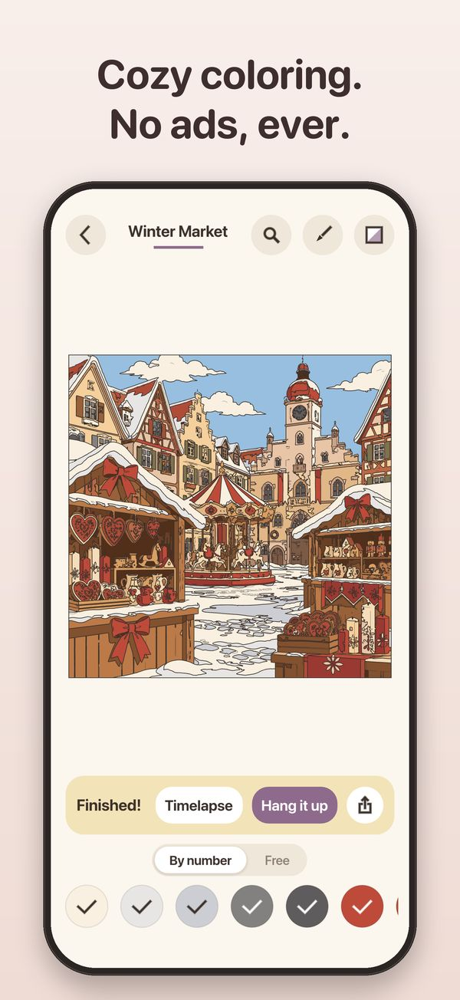
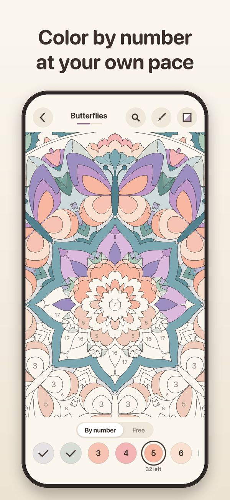
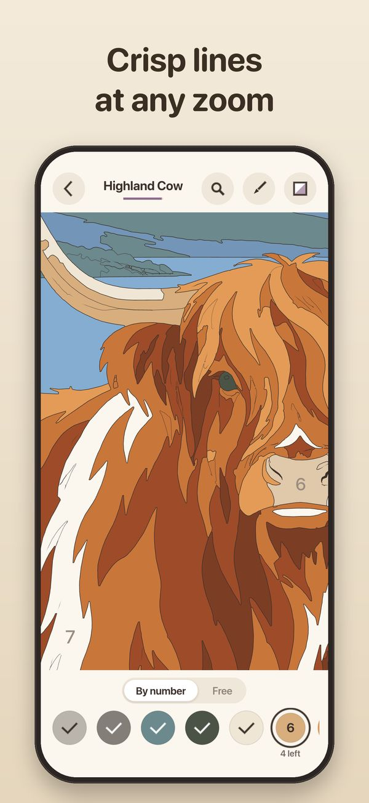
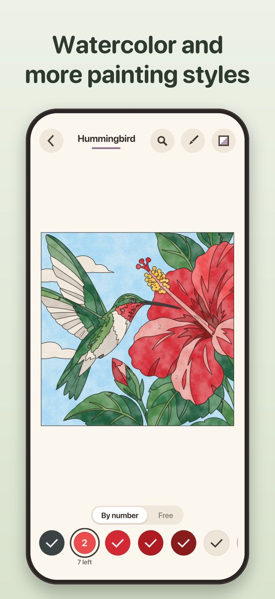
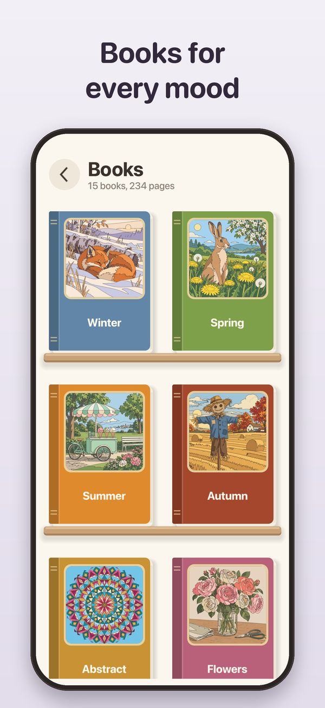
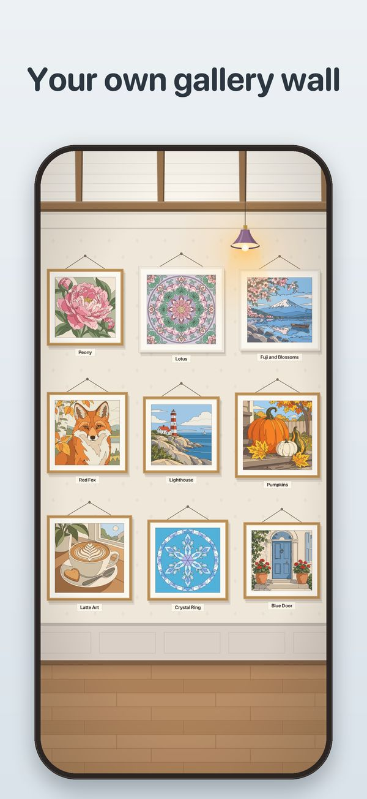

An ad-free paint by number app for adults
Colorwall is a coloring app for the moments when you want to slow down. Pick a picture, tap a number and watch it come to life, area by area, with soft colors, gentle sounds and no timer.
Many coloring apps show an ad after nearly every picture. Colorwall has no advertising anywhere: no banners, no videos, no pop-ups. No account and no tracking either. And the pictures are made for grown-ups: realistic, detailed illustrations rather than simple cartoon pages.
How color by number works in Colorwall
- Pick a picture. Open a book, or start with today's free picture.
- Choose a color. The palette at the bottom shows the picture's colors with their numbers, and how many areas of the chosen one are left.
- Tap the numbered areas. Pinch to zoom in for the small ones. Taps are forgiving: a tap close to an open area of your color still fills it, and in linked patterns one tap fills every matching stripe.
- Finish it. A warm light passes over the finished picture, and a sound and a haptic buzz mark the moment. Then watch the timelapse, hang the picture on your wall or share it.
No timer, no pressure: stop whenever you like, and the picture waits exactly where you left it.
Colorwall on iPhone: screenshots






Color by number or with your own colors
Under every picture sits a switch: By number or Free. By number, each area wants the color of its number. In Free mode you choose any color from the palette for any area and make the picture your own.
Easy, Medium and Hard pictures
Every book has pictures in three levels: Easy with up to 250 areas for a short break, Medium with up to 750 for an evening, and Hard with more than that for long, quiet evenings.
Realistic paint by number, crisp at any zoom
Every page is a vector drawing, so the lines stay sharp however far you zoom in: the fur of a highland cow, the petals of a peony, the tiny windows of a Christmas market.
15 coloring books for adults
234 pictures in 15 books, plus a picture of the day, a picture of the week and, in December, an Advent calendar with 24 more.
Four free season books
Winter, Spring, Summer and Autumn are completely free, with nine pictures each from Easy to Hard.
Eleven themed books
Abstract, Botanical · Flowers, Botanical · Trees, Landscapes, Japan, Animals, Ocean, Mandalas, Cozy Streets, Cafe & Sweets and Snowflakes, with eighteen pictures each. The first Easy and the first Medium picture of each are free to try.
Christmas and winter coloring
The free Winter book has hot cocoa, a sleeping fox and a mountain hut, and in Snowflakes every page is one big snowflake to color like a mandala. In December the free Advent calendar opens a door a day, with a gingerbread house, a nutcracker and a steam train among the pictures behind them.
A free picture every day and a bigger one every week
Every day a new picture waits for you, free: cozy everyday scenes like tea by the window or a reading nook. Every week brings a bigger Hard picture, such as a tall ship. Open a picture on its day or in its week, and it stays yours for good. From 1 to 24 December, the door of the Advent calendar takes the place of the picture of the day.
Advent calendar coloring: a free picture behind every door
From 24 November an Advent calendar hangs on your home screen, its 24 doors still closed. From 1 to 24 December one door opens each day, by your iPhone's date, and behind it waits a winter or Christmas picture to color: a snowy owl, a gingerbread house, a Christmas market stall and, on the 24th, a grand Christmas tree with presents.
The pictures grow with the season: doors 1 to 8 are Easy, 9 to 16 Medium and 17 to 24 Hard. During those days the door of the day takes the place of the picture of the day. Missed a door? You can still open it until 6 January, and every picture you open stays yours for good. The Advent calendar is free for everyone.
Four painting styles
Each style changes how the areas look while you fill them: Flat clean and even, Colored pencil, Watercolor and Painted with the texture of their technique. Flat and Colored pencil are included for everyone; Watercolor and Painted come with Colorwall Plus.
Timelapse and your own gallery wall
Every finished picture can play again as a timelapse, filling in the order you tapped, and you can share it as a video. Then hang it up: each finished picture gets a frame on your own gallery wall. Six paper colors, from cream to lavender, change the look of the whole app; more of them open as you color.
Mindful coloring without ads or timers
Colorwall is made to help you unwind after a long day. Nothing hurries you, and nothing asks you to watch a video for a reward. Sounds and haptics are soft, and both can be switched off. Your pictures stay on your iPhone (see the privacy policy).
Frequently asked questions
Is there a paint by number app without ads?
Yes. Colorwall has no advertising at all: no banners, no videos, no pop-ups, not between pictures and not anywhere else in the app. And it will stay that way.
Is Colorwall free?
Colorwall is free to download. The four season books (Winter, Spring, Summer and Autumn) are completely free, and so are the first Easy and the first Medium picture of every other book, a new picture every day, the picture of the week, the Advent calendar and the painting styles Flat and Colored pencil.
Is the Advent calendar free?
Yes. The Advent calendar is free for everyone, without Colorwall Plus or a book purchase. From 1 to 24 December one door opens each day, a missed door can still be opened until 6 January, and every picture you open stays yours for good.
What does Colorwall Plus include, and what does it cost?
Colorwall Plus opens every book and every painting style, including Watercolor and Painted: 4.99 EUR a month, 29.99 EUR a year with a 7-day free trial for new subscribers, or 59.99 EUR once for a lifetime. The App Store shows the price in your country's currency.
Can I buy single books instead of a subscription?
Yes. Every themed book can be bought on its own for 2.99 EUR. It is a one-time purchase and stays yours.
How do I cancel my subscription?
Subscriptions are handled by Apple: iPhone Settings › your name › Subscriptions › Colorwall. Cancel at least 24 hours before the end of the current period; otherwise it renews automatically.
How do I restore my purchases, for example on a new iPhone?
In Colorwall, open Settings › Colorwall Plus › Restore purchases, signed in with the Apple Account you bought with.
Does Colorwall work offline?
Yes. Every picture is inside the app, so you can color without an internet connection. You only need one to buy something or to restore purchases.
Which devices does Colorwall run on?
Colorwall is made for iPhone and needs iOS 17 or later.
Which languages does Colorwall speak?
18 languages: English, German, French, Spanish, Portuguese, Italian, Dutch, Polish, Turkish, Ukrainian, Indonesian, Filipino, Vietnamese, Thai, Japanese, Korean, Chinese (Simplified) and Hindi. “Automatic” follows your iPhone; you can change it in Settings › Language.
Where are my pictures saved? Can I move to a new iPhone?
Only on your device. There is no account. Your pictures are part of your iPhone backup (iCloud or computer): if you set up a new iPhone from a backup, they come along.
Does Colorwall collect data about me?
No account, no tracking, no analytics, no advertising. Only when the app crashes or hits an internal error does it send an anonymous technical report so the bug can be fixed. The report contains none of your pictures, and your IP address is not stored.
Support
Questions, problems or ideas? Write to us. We usually answer within a few days:
E-mail: mariohaesler@protonmail.com
Please tell us your iPhone model, the iOS version and the app version (at the bottom of the settings).
Made by Cavebeer Entertainment
Colorwall comes from Cavebeer Entertainment, a one-person studio in Berlin. More from the studio:
- Idle Monster Forge: your monsters dig gold for you, even while you're away.
- Idle Transport Corp: build your logistics empire with trucks, trains, ships and drones.
Writing about Colorwall? The press kit has the facts, the screenshots and the icon.